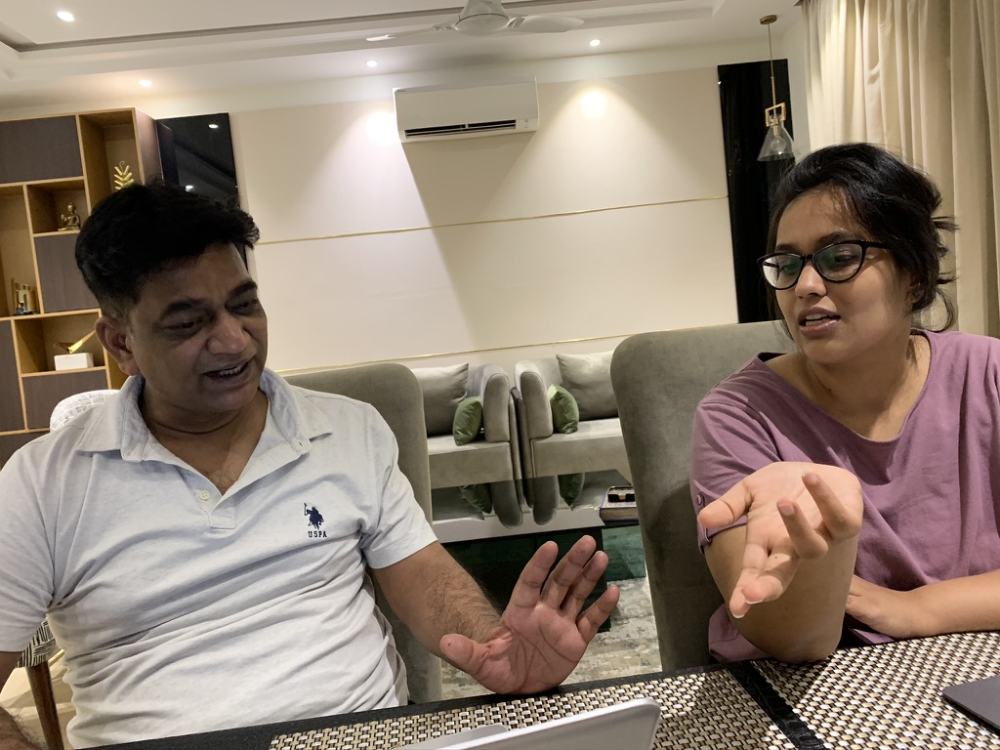
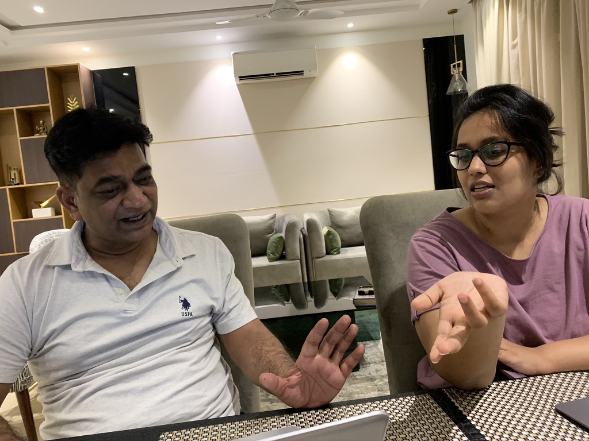

Not because I win arguments with him (I don't), and certainly not because I cry the most in the family (I do). He doesn't say it because I've scaled mountains or walked into fire (though I've faced metaphorical ones). He says it because he's watched me choose the hard thing over the easy ones, again and again.
Growing up, my dad never threw around compliments carelessly. So when he tells me, "You're brave", I don't take it lightly. Infact, I carry it like a badge of honor, stitched to my heart.
I was five when I first proved him right
We had just moved from North India to South India for his job. It was my first day of school. I didn't speak English or the local language, and no one there spoke Hindi.
The school was far from our home, and I was supposed to take the school bus back. But because I didn't have my ID card (it was, after all, my first day), they didn't let me board. The school contacted my dad, who was working on the other side of the city. It took him nearly an hour to reach. He arrived, panicked about finding his little girl terrified and in tears.
What he found instead surprised him. The happiest child, delighting in having all the swings and slides to myself, sipping lemonade and munching cookies the teachers had kindly provided. It was my kingdom.
I wasn't scared. I was curious. I was brave.
A life built on movement and adjustment
What followed was a childhood defined by movement. My father's transfers meant changing schools across different regions of India, often in the middle of academic years. Each move meant adjusting to new people, languages, food, and weather, all at odd times when other kids had already formed their friendship circles.
This constant adaptation became my superpower. I learned to speak to anyone and everyone, to find common ground across differences. Just four years after being that lost Hindi speaking child in South India, I stood before an entire school in yet another state to receive the "Best English Speaker" award in third grade. Each transfer that might have broken another child's spirit only strengthened mine.
Brave came in many shapes
He sees bravery in my entrepreneurial spirit. How I would paint diyas (oil lamps) and sell handcrafted items at Diwali stalls, finding joy in creating something from nothing and the confidence to put a price tag on my creativity.
He called me brave when I stood up to teachers and administrators in school when I felt something was unfair, even when I knew it would come back to bite me.
He called me brave when I once got into a real physical fight at 14 with my closest friend because she said something hurtful about my brother. I was fierce about protecting people I loved. Still am.
Brave didn't always look strong
Not all bravery looks like strength from the outside. During my teenage years, I went through a phase I still struggle to define. I couldn't communicate my feelings, pushed away friends, and fought constantly with my family. Making matters worse, my father was posted in another city for work.
I resisted therapy, thinking it "uncool" (how wrong I was!). Yet somehow, I found my way through that darkness. My father calls me brave not just for emerging from that period, but for the vulnerability it took to eventually accept help.
Brave looks like boarding that flight
Now he calls me brave when he sees me traveling the world alone, even to remote locations. I know it fills him with pride as I navigate flights, hotels, local SIMs, and guides in countries where I don't speak the language. I sense that he feels like he's living vicariously through my adventures, experiencing the world through the courage of his daughter.
Brave means showing up, again and again
I've failed often. I didn't get into my dream college. I didn't know how to build a startup. I was stuck during COVID with no plan. But I didn't stop. I tried. I tried again. I took the next best option and made it work.
My dad calls me brave when he watches me reach out to people I admire, chase opportunities that seem just out of reach, or send that cold email that might open doors. He recognizes the courage it takes to risk rejection in pursuit of growth.
I believe, when my dad calls me brave, it's not because I never feel afraid. It's because he's witnessed, time and again, my willingness to feel the fear and move forward anyway. And maybe that's the greatest gift my father gave me, not protection from life's challenges, but the unshakable confidence that I have what it takes to face them.
So yes, my dad calls me brave for a reason.
 
